直近1週間の更新
6/14 (土)
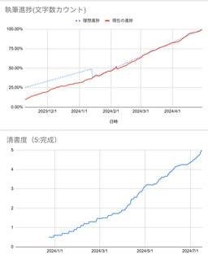
ソフトウェアテスト徹底指南書を執筆しました 1
1 千里霧中
千里霧中
2年前から、ソフトウェアテストをテーマにした「ソフトウェアテスト徹底指南書」を執筆していました。今月、その書籍が発売されます。 今回はその書籍の概要と、執筆活動記をまとめたいと思います。gihyo.jp ソフトウェアテスト徹底指南書 ソフトウェアテスト徹底指南書の内容は、開発チームが備えるべきソフトウェアテストの技術・アプローチ・知識を包括的に・体系的に解説したものになっています。開発チームを構成する様々な方（テストエンジニアに限らず、開発者やマネージャも含め）に広く読んでいただければと思います。 アウトラインは次のようになっています。 Part I ソフトウェアテストと品質マネジメント ソフ…
3時間前
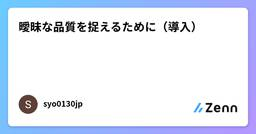
曖昧な品質を捉えるために（導入）  Zennの「品質」のフィード
Zennの「品質」のフィード
序章: なぜソフトウェアエンジニアが品質を語るべきなのか？ソフトウェア開発における品質は、単にテストケースの通過率や不具合の少なさだけで語れるものではありません。特に、自社プロダクトにおいては複数の機能や連携先、関係部門が複雑に絡むため、品質とは「ユーザーにとっての信頼性や一貫性」であり、それをどう担保していくかが問われます。近年では、以下のような背景から、ソフトウェアエンジニアが品質に対してより主体的に関与する必要性が高まっています。開発・運用の境界が曖昧になり、品質を部門横断的に見る必要がある複雑な連携先（API、外部デバイス、他プロダクト）によってテスト容易性や再現性...
8時間前
動体検知カメラで行った終夜テストのMQTTデータを可視化する Zennの「Test」のフィード
終夜テストアナログ電波時計の針が夜更けに勝手にくるくる回る怪現象が起こっているとの報告。原因を探る前にまずは現象を把握するためのデータを揃えたいのですが夜中は寝てる。ESP32-CAMのカメラで動体検知してMQTTデータを送信。可視化ツールでグラフ化して何時ごろに動きがあるのか／動く条件はあるのか探る仕組みを作ります。 システム構成・動体検知カメラ ・・・ ESP32-CAM・データ可視化用 MQTTクライアントアプリ ・・・ MQTT Explorer・MQTT ブローカーサービス ・・・ mqtt.eclipseprojects.io または test.mos...
10時間前
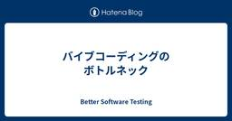
バイブコーディングのボトルネック  Better Software Testing
Better Software Testing
ChatGPTに頼りながらRSSリーダーを実装した： github.com コードの95%くらいはChatGPTに書いてもらったので、僕がやったのはコードレビューと動作確認とリファクタリング程度。 今回感じたのは、バイブコーディングのボトルネックって人間（主語が大きい）なのかなということ。 人間は集中力が続かない（せいぜい2-3時間程度） 人間はミスをする（プロンプトのタイポや誤った指示） 人間は突然仕様を変更したり追加したりする 生成AIは我々の指示に従って愚直にコードを作ってくれているのに、人間側のせいでスクリプトの完成まで時間がかかってしまったり手戻りが発生してしまったり。。 また、 人…
14時間前
Claude CodeでiOSシミュレーターの自動操作ツールを作ったら、AIエージェント時代の開発を体験できた話 Zennの「QA」のフィード
この記事をNotebookLMに読ませてpodcast化した音声ファイルを用意しています。こちらも合わせてご覧ください。https://notebooklm.google.com/notebook/ad0c9cab-d2eb-4ea5-9ac2-a2596969b522/audio はじめにiOSシミュレーターを自動操作するCLIツール 「isc」を作りました。https://github.com/henteko/iscこのツールはCLIとして動作して、iOSシミュレータの起動や、アプリのインストール、起動、タップ操作や画面録画などを行うことができると同時に、それらのコマンド...
1日前
6/13 (金)
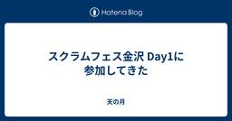
スクラムフェス金沢 Day1に参加してきた  天の月
天の月
www.scrumfestkanazawa.org スクラムフェス金沢2025がいよいよ始まり、運営として参加してきたので会の様子と感想を書いていこうと思います。 到着〜受付 スタッフ業務 スタッフ打ち上げ ホテルに帰宅 到着〜受付 去年は家族が手足口病になってその病院に付き添っていて遅れたのですが、今年は仕事の予定がどうしても調整つけられず、またしても遅れて参加することになりました... 16時くらいに到着した後はトランシーバーを受け取ったりPekoeのためにiPadを準備したりして、ひたすら受付をやっていたのですが、23人くらいの参加者の方を受付して、お久しぶりですの人とはしっかり会話がで…
1日前
『テストの7つの原則』〜 パート④ 〜 Zennの「Test」のフィード
はじめに現在、アプリ開発者としてプロダクトの持続的な成長やユーザーへのコミットに寄与するためにも、SDLC全体を見渡して開発をすること、および、それにはテストに関する体系的な知識が必要だと考え、それを効率良く学べるJSTQB Foundation Levelの資格試験の勉強をしており、そこでのインプットを記事にしたいと思います。今回はその中でも「テストの7つの原則」の一部について記事にしたいと思います。なお今回は 欠陥の偏在こちらの原則について記事にしてみようと思います。 欠陥の偏在とは皆さんはこんな場面に遭遇したことはありますか？『この機能、...
1日前
『テストの7つの原則』〜 パート④ 〜  ソフトウェアテストタグが付けられた新着記事 - Qiita
ソフトウェアテストタグが付けられた新着記事 - Qiita
はじめに現在、アプリ開発者としてプロダクトの持続的な成長やユーザーへのコミットに寄与するためにも、SDLC全体を見渡して開発をすること、および、それにはテストに関する体系的な知識が必要だと考…
1日前
Cline x MCP サーバーで入社後のシステム理解を効率化 13 QA - エムスリーテックブログ
QA - エムスリーテックブログ
【QAチーム ブログリレー4日目】 AIを使ってサービスを理解しようとする人（今回の記事のイメージ） はじめに はじめまして、QAチームの草場です。 ５月に中途入社して１ヶ月が経ちました。 以前の会社には新卒以来長く勤めていて、今回が初めての転職なので日々新鮮に感じることが多いですが、優秀なエンジニア陣の力を借りながら奮闘しているところです。 この記事では、既存サービスの開発チームに途中から入ることになったQAが、既存サービス理解のために工夫したことを共有します。
2日前
ICSTの併設ワークショップInSTAに論文が採択されたので、発表してきました！ 3 QA - freee Developers Hub
QA - freee Developers Hub
こんにちは。支出管理領域のQAマネージャーをしているrenです。 2025年4月に行われたICST 2025の併設ワークショップInSTA 2025に事例論文が採択され現地発表してきたので、発表までの経緯や開催地の様子をレポートします。 ICSTの紹介 ICSTはIEEEの国際カンファレンスで、International Conference on Software Testing, Verification and Validationの略です。ICST 2025の開催地はイタリアのナポリで、海岸沿いのコングレスセンターが会場でした。 conf.researchr.org 発表当日のコングレ…
2日前
6/12 (木)
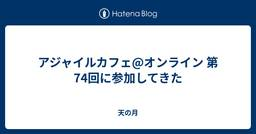
アジャイルカフェ@オンライン 第74回に参加してきた 天の月
アジャイルカフェ@オンライン 第74回（※Zoom開催 耳だけOK） - connpass こちらのイベントに参加してきたので、会の様子と感想を書いていこうと思います。 会の概要 会の様子 ワークショップとは？ 作るとき何を大切にしているか？ 作るとき悩むポイント？ 会全体を通した感想 会の概要 アジャイル実践者から寄せられた悩みに対して、アジャイルコーチの御三方がいろいろな回答をしていくイベントです。 今日のお題は「アジャイル未経験・初心者向けのワークショップの作り方」でした。 会の様子 ワークショップとは？ 受講者が主体となって学ぶものがワークショップだという話がありました。 作るとき何を…
2日前
Next.jsにVitest導入したので備忘も兼ねて手順をまとめる Zennの「Test」のフィード
Next.jsプロジェクトでのVitest実装備忘録 はじめにNext.jsプロジェクトにテスト環境を構築する際、従来はJestが主流でしたが、最近はVitestが注目を集めているようです。VitestはViteベースの高速なテストランナーで、Next.jsとの相性も良く、設定も簡潔に済ませることができるとのことです。参考：VitestとJestの比較サイト今回はNext.jsプロジェクトにVitestを導入したのでその手順を備忘も兼ねてご紹介します。良かったら参考にしてください。 Vitestを選ぶ理由高速な実行速度: Viteベースのため、テストの実行が非...
2日前
【Request for Comments: 2606】テストメールでよく利用する"example.com"のメモ Zennの「Test」のフィード
課題ウェブ開発などでexample.comがテストメールやサンプル表示（ダミーテキスト）として利用されますが、なぜ使っていいのかよく忘れるのでメモ。 RFC 2606インターネットの混乱や衝突を防ぐ目的で、プライベートのテストのためにトップレベルドメインとセカンドレベルドメインを、ちょっとだけ予約させちゃうね、という決まりです。1999年に制定されたようです。以下のオフィシャルドキュメントの四章にもある通り、「Internet Assigned Numbers Authority, IANA」という組織によって予約がされています。 予約済みのセカンドレベルドメイン名...
2日前

Flutterアプリに画像回帰テストを導入する方法（Alchemist + GitHub Actions） Zennの「Test」のフィード
こんにちは、takuroです。今回は、Flutterアプリに画像回帰テスト（Visual Regression Test）を導入方法を紹介します。 背景開発中のUIコンポーネントに対し、以下のような課題を感じていましたデザインの崩れやリグレッションがレビューでしか検出されないPRごとにUIの変化を確認するのが手間コンポーネントが増えるほど、人的チェックのコストが増大これらの課題を解決するために、「UIの見た目をテストする仕組み」として画像回帰テストの自動化を導入しました。 AlchemistとはAlchemistは、FlutterアプリケーションのUIコンポーネ...
3日前
6/11 (水)
yr-learning Vol68に参加してきた 天の月
yr-camp.connpass.com こちらのイベントに参加してきたので、会の様子と感想を書いていこうと思います。 雑談 Haskellとの格闘 FizzBuzz 雑談 今回の参加メンバーに直近結婚したメンバーがいたので、そのお祝いをしました。その後は結婚生活を送る上での秘訣や結婚式や婚約指輪/結婚指輪の話をしていきました。 Haskellとの格闘 Haskellでまずテストを書いてみようということで、最初は前回のコードをもとににらめっこしていました。 import Lib (add)import Test.Hspec main :: IO ()main = hspec $ do desc…
3日前
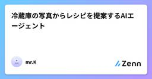
冷蔵庫の写真からレシピを提案するAIエージェント Zennの「Test」のフィード
背景と課題忙しい日々での料理の悩みと食品ロス: 冷蔵庫を開けると様々な食材が入っているのに、「何を作れば良いかわからない」という経験はありませんか？ これは俗に「冷蔵庫ブラインドネス」とも呼ばれ、目の前に材料があっても組み合わせが思いつかない現象です。実際、家庭内で使い切れずに捨てられる食品は非常に多く、例えばイギリスでは年間470万トン（家庭で週8食分に相当）の食品が無駄にされているという報告もあります。米国でも平均的な家庭が週に6.2カップ分の食品を捨てており、年間では322カップ（テイクアウト用容器360個分）に上るとの調査結果があります。人々は「いずれ食べるつもり」で食材を買い...
3日前
【徹底解説】LLMの評価基準と品質向上を支えるRagasの基本_RAGやAIエージェントの評価指標からデータ作成まで Zennの「QA」のフィード
皆さんこんにちは、web3やAIなど最先端領域に特化したソフトウェアテストを専門的に行う、DAIJOBU株式会社の代表のふぇね(@0xfene)です。弊社ではAIエージェントに特化した品質保証サービス「AI Agent品質担保くん」にて、LLMアプリケーション(とりわけAIエージェント)の品質保証に精力的に取り組んでいます。実質LLMOpsのBPOサービスですね。目次はじめに 〜PoC止まり脱出の鍵はLLMの品質向上にある〜本記事についてRagasとはRagasの特徴客観的な評価指標テストデータの自動生成シームレスな統合フィードバックループの構築評価指標と...
3日前
はじめての記事
Zennの「Test」のフィード
テスト用にアカウントを作ってみた。どんなことが出来るのか試したく記事を書いていくYahootest.jsconsole.log('test');BingYouTube 見出し😀😁😂
3日前
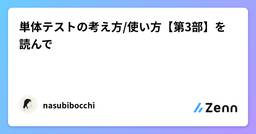
単体テストの考え方/使い方【第3部】を読んで Zennの「Test」のフィード
はじめに単体テストの考え方/使い方の【第3部】を読んで私が解釈した内容をもとに、ソフトウェア開発におけるテスト戦略のうち、統合テストについてまとめました。単体テストが個々のユニットの正確性を保証する一方で、複数のコンポーネントや外部システムが連携する部分の動作を検証する「統合テスト」もまた不可欠です。この章では、統合テストの定義、その範囲、そしていつ、どのように実施すべきかについて解説します。実際に本を読んでみると理解度が変わるので、気になれば読んでみてください。違う理解等があれば、コメント等お願いします😌https://zenn.dev/nasubibocchi/artic...
3日前
単体テストの考え方 / 使い方【第2部】を読んで Zennの「Test」のフィード
第2部：単体テストとその価値「良い単体テスト」とは何でしょうか？テストコードもまた負債となり得るため、その価値を最大限に引き出す設計が求められます。『単体テストの考え方 / 使い方』（マイナビ出版）の内容を読んで、私が解釈した内容をまとめました。実際に本を読んでみると理解度が変わるので、気になれば読んでみてください。違う理解等があれば、コメント等お願いします😌https://zenn.dev/nasubibocchi/articles/88e4333fbe6ff4 4本の柱良い単体テストは、以下の4つの柱によってその価値が支えられます。退行（regression...
3日前

参加者へリマインドメールをお送りしました＆今回のWACATEは予習推奨です！  ブログ - WACATE
ブログ - WACATE
WACATE 2025 夏にお申し込みくださりありがとうございました！ 締め切り前に申し込んだ皆さんには当日までの注意事項等を書いたメールを先ほどお送りしました。 夏に開催されるWACATEは、1つの物事に対して狭く深く続きを読む投稿 参加者へリマインドメールをお送りしました＆今回のWACATEは予習推奨です！ は WACATE に最初に表示されました。
3日前
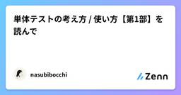
単体テストの考え方 / 使い方【第1部】を読んで
Zennの「Test」のフィード
はじめにソフトウェア開発において、品質を担保するために欠かせないのが「テスト」です。中でも「単体テスト」は、開発の初期段階でバグを発見し、システムの品質を向上させる上で非常に重要な役割を担います。しかし、「単体テスト」と一口に言っても、その定義や手法は多岐にわたります。ここでは、『単体テストの考え方 / 使い方』（マイナビ出版）の内容を読んで、私が解釈した単体テストの基本的な概念から、その価値を最大限に引き出すための考え方までを解説します。実際に本を読んでみると理解度が変わるので、気になれば読んでみてください。違う理解等があれば、コメント等お願いします😌https://zen...
4日前
【Python】受け取った引数をファイルに出力する Zennの「QA」のフィード
概要・ get_arg.py実行時に受け取った引数を指定したファイルに出力します。（改行） サンプルコードimport osimport sysdef write_args_to_file(file_path, args): """ 引数を指定したファイルに出力する。 :param file_path: 出力先のファイルパス :param args: コマンドライン引数のリスト """ # 出力先のディレクトリが存在しない場合は作成 os.makedirs(os.path.dirname(file_path), e...
4日前
6/10 (火)
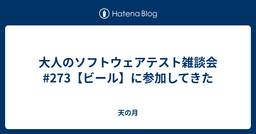
大人のソフトウェアテスト雑談会 #273【ビール】に参加してきた 天の月
ost-zatu.connpass.com 今週もテストの街葛飾に行ってきたので、会の様子と感想を書いていこうと思います。 コンサルタント ガバナンス ソフトウェア・シンポジウム AI投資 調達 コンサルタント ドメイン知識に精通しているというコンサルタントや、インターネットにある情報を綺麗にスライドにまとめるコンサルタントというのはいらないよね、という話が出ていました。自分自身が持っている知識があったとしても業務に役に立つわけではないので、自分が知らないことを教えてくれと思うそうです。 また、分かりやすい指標として、壁打ちをコンサルタントの人としたときに、自分が予想できるような回答が返ってく…
4日前
スクラム開発のQA改善で効果的だった5つの取り組み 1 Zennの「Test」のフィード
こんにちは。クリフォアアプリチームでエンジニアをしているキタです。クリフォアアプリチームではスクラム開発を実践していますが、QA に関してさまざまな課題を抱えていました。抱えている課題の解決に向けて約 1 年間、チームの QA エンジニアや所属メンバーと協力して改善に取り組んできました。その結果、成果が出始めているので、今回は効果的だった 5 つの取り組みについて紹介します。 実施した取り組み本記事では以下の 5 つの改善活動について、課題・取り組み・効果を具体的に紹介します。テストの目的を明文化 - メンバー間の認識齟齬を解消スプリント内でテストまで完結 - リ...
4日前
スクラム開発のQA改善で効果的だった5つの取り組み 1 Zennの「QA」のフィード
こんにちは。クリフォアアプリチームでエンジニアをしているキタです。クリフォアアプリチームではスクラム開発を実践していますが、QA に関してさまざまな課題を抱えていました。抱えている課題の解決に向けて約 1 年間、チームの QA エンジニアや所属メンバーと協力して改善に取り組んできました。その結果、成果が出始めているので、今回は効果的だった 5 つの取り組みについて紹介します。 実施した取り組み本記事では以下の 5 つの改善活動について、課題・取り組み・効果を具体的に紹介します。テストの目的を明文化 - メンバー間の認識齟齬を解消スプリント内でテストまで完結 - リ...
4日前
QA初心者をお迎えするときに気をつけていること Zennの「QA」のフィード
2002年に社会人としてデビューしていろんな業種業界を渡り歩いてきました。その経験から言えることなんですが、QAという職種はIT業界では「入り口」になりやすいんですよね。で、その入り口で自分に関わった方には「ソフトウェアテスト」という仕事で食べていけるようになって欲しいと思っています。日頃、気をつけていることをバーっと書き出してみました。説教くさくなりましたが、何かのご参考になれば！ ソフトウェアテストに必要なこと システムテストでスキルを磨くバグへの感度を上げる経験ベースのテスト観点を増やす「私個人」の値段を上げて欲しいと思います。見たことのあるバグ、テ...
5日前
Firebase App Test Agent 自然言語のE2Eテストを試してみた 18 QA - エムスリーテックブログ
【QAチーム ブログリレー2日目】 こんにちは。逝去から1年経っての俄かポール・オースター2巡目通読、追憶がちなマルチデバイスチームQA前川です。 チームで開発する複数アプリとサーバサイドのQAでAI活用による効率化が求められる中、Firebase App DistributionのApp Test Agent機能がAndroidでプレビューリリースされた、ということで試してみました。 自然言語テストなので厳密な記述は不要で与しやすいかと思いきや、自然言語ゆえに意外なところでやや手間どった初動という感触でした。 App Test Agentとは 有効化 テストケース記述＆実行 所感 We ar…
5日前
【Python】色々な拡張子のサンプルログを作成するコード Zennの「QA」のフィード
概要今回は色々な拡張子のサンプルログを作成するコードを紹介ログを作りたい！でも実際に収集して持ってくるのは大変・・・と言うことがあると思います。そんな時にこのコードを使えば簡単なサンプルログを作成することができます！！ サンプルコードimport osimport randomimport stringfrom datetime import datetimedef create_log_folder(output_dir): """ ログフォルダを作成する。すでに存在している場合は作成しない。 :param output_dir: ログ...
5日前
6/9 (月)
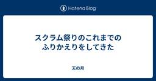
スクラム祭りのこれまでのふりかえりをしてきた 天の月
www.scrummatsuri.org こちらのふりかえりをしていたので、今日はその記録です。 着々と準備が進められている 想像以上の反響 もうちょい運営メンバー同士で密に話したい 夜遅い 地域トラック集結 運営がやりたいことをもっとやる 着々と準備が進められている 初開催のカンファレンスということで色々大変な面もありますが、とはいえ昨年までのスクラムフェス大阪をベースとしながら着々とカンファレンス開催のための準備が進められています。 運営メンバーがカンファレンス運営に一定慣れているというのもありますし、集まったら作業をして前に進めよう、をずっと実践できているのが大きいのかなと思っています。…
5日前
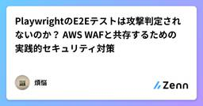
PlaywrightのE2Eテストは攻撃判定されないのか？ AWS WAFと共存するための実践的セキュリティ対策 Zennの「Test」のフィード
はじめにPlaywrightを導入して、ローカル環境（localhost）でのE2Eテストは完璧！「さあ、ステージング環境で本格的にテストするぞ！」と意気込んだ矢先、CI/CDからのテストが失敗。ログを見ると、どうやらアクセスが拒否されている...。こんな経験はありませんか？これは、E2Eテストの自動化ツールが、意図せずセキュリティシステムに「攻撃」と見なされてしまう、非常によくあるパターンです。本記事では、Playwrightを使ったE2Eテストで直面しがちな、以下の2つのセキュリティ課題に焦点を当て、その原因と具体的な解決策を、特にAWS環境を例にとって解説します。テス...
5日前
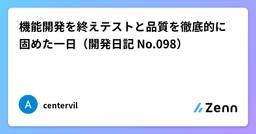
機能開発を終えテストと品質を徹底的に固めた一日（開発日記 No.098） Zennの「Test」のフィード
!この記事はgemini-2.5-flash-preview-04-17によって自動生成されています。 関連リンク前回の開発日記 はじめに昨日はテストカバレッジの維持とE2Eテストの実装に時間を費やしました。そして今日、いよいよ機能開発を一段落させ、明日のリリースに向けて最終的な品質向上に全力を注ぐ一日となりました。今日の最重要テーマは、テストカバレッジの維持・向上、E2Eテストの拡充、そしてテンプレート・モデル指定機能のテスト強化です。 背景と目的今回の開発サイクルで計画していた主要な機能開発は、本日で完了させる予定でした。明日にはリリース作業を控えているため...
6日前
6/8 (日)
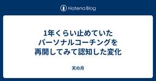
1年くらい止めていたパーソナルコーチングを再開してみて認知した変化 天の月
今日は完全に個人の雑記ですが、タイトルの通り、1年くらい止めていたパーソナルコーチングを再開してみて結構大きな変化を認知したり、一回あたりのセッションで得られる気づきが多くなっているなあと感じたので、その感触を忘れないように整理しておこうと思ってブログを急遽書くことにしました。 自分らしさに潜んでいた呪縛 宣言文にもあった「つながり」が意味していたところ 探究心への執着の薄れ 自分らしさに潜んでいた呪縛 さすがに自分らしさとは具体的にXXXです！とまではこのブログで明言できないのですが、その自分らしさが自分のことを縛り付けている可能性があるということに気が付きました。 確実にXXXの部分は自分…
6日前